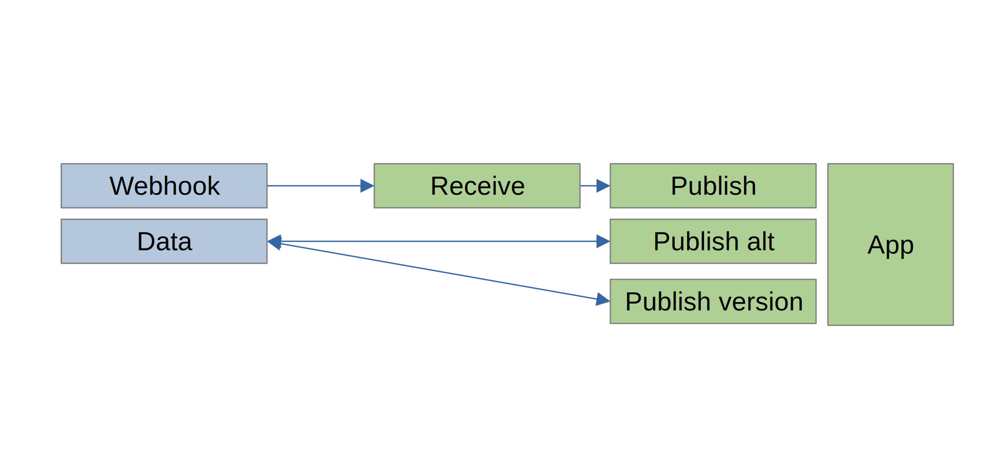

Webhook POC app
- Standard app served on port 3000
- Receives subscribed webhooks as endpoint /webhooks and validates
- e.g. curl --header "Content-Type: application/json" --request POST -d '{"message":"Any message longer than 8 chars"}' http://localhost:3000/webhook
Extra fields may be passed and use in validation at this layer
- Validated webhooks can then be split, parsed, and publised to multiple places {ICE endpoints, vendors, internal apps, etc}
In this example validated webhooks create a seperate POST request to a websocket server running on port 8088. This websocket pushes fake data to this page. This could just as easliy be any ICE / vendor endpoint.

Real-Time Notifications